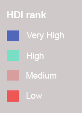

<html lang="es">
    <head>
        <title>Leaflet HDI map - Rafael Marcos Lucero</title>
        <meta charset="utf-8" />
        <meta name="viewport" content="width=device-width, initial-scale=1.0">
        <meta name="author" content="autor" />
        <meta name="description" content="descripción página">
        <meta name="robots" content="index,follow">
        <link rel="stylesheet" href="https://unpkg.com/leaflet@1.4.0/dist/leaflet.css" />
        <script src="https://unpkg.com/leaflet@1.4.0/dist/leaflet.js"></script>
        <script type="text/javascript" src="countryhdi.js"></script>
        <script>
            var map, capa1;
            function init() {
                map = L.map("map", {
                    center: [14.971744967479937, 9.754996597712307],
                    zoom: 3,
                    zoomControl: true
                });
                capa1 = L.tileLayer('https://{s}.basemaps.cartocdn.com/light_nolabels/{z}/{x}/{y}{r}.png',
                    {
                        maxZoom: 8,
                        minZoom: 1,
                        attribution: '&copy; <a href="https://www.openstreetmap.org/copyright">OpenStreetMap</a> contributors &copy; <a href="https://carto.com/attributions">CARTO</a>'
                    });
                capa1.addTo(map);

            function getColor(i) {
                return i > 0.798 ? '#5167b9' :
                i > 0.699  ? '#78dfc5' :
                i > 0.556  ? '#d79e9e' :
                i > 0.353  ? '#ee5656' :
                      '#ffffff';
            }

            function style(feature) {
                return {
                fillColor: getColor(feature.properties.HDI),
                weight: 1.5,
                opacity: 1,
                color: 'white',
                dashArray: '3',
                fillOpacity: 0.7
                };
            }

            L.geoJson(countryhdi, {style: style}).addTo(map);

            //popup    
            function popup(feature, layer) { 
                if (feature.properties && feature.properties.NAME) 
                { 
                layer.bindPopup(feature.properties.NAME); 
                } 
                }

            geojson = L.geoJson(countryhdi, { 
            style: style, onEachFeature: popup 
            }) 
            .addTo(map);

            //box-title
            var info = L.control();

            info.onAdd = function (map) {
            this._div = L.DomUtil.create('div', 'info'); // crear un div con una class "info"
            this.update();
            return this._div;
            };

            info.update = function (props) {
            this._div.innerHTML = '<h1>Human Development Index</h1><br>Click on each country'
            };

            info.addTo(map);

            //legend
            var legend = L.control({position: 'bottomleft'});
 
            legend.onAdd = function (map) {
 
            this._div = L.DomUtil.create('div', 'info-legend'); // crear un div con una class "info-legend"
            this.update();
            return this._div;
            };

            legend.update = function (props) {
            this._div.innerHTML = '<b></b>'
            };

            legend.addTo(map);
 
            }
        </script>
        <style>
        body 
        {
            margin: 0;
            padding: 0;
            overflow: hidden;
        }
        h1 {margin-bottom: -10px; font-family:Arial; font-size:18px; color: grey;}
        #map 
        {
            height: 100%;
            width: 100%;
        }
        .info {
        padding: 10px 10px;
        font: 14px Helvetica;
        background: white;
        background: rgba(255,255,255,0.8);
        box-shadow: 0 0 15px rgba(0,0,0,0.2);
        border-radius: 5px;
        }
        </style>
    </head>
    <body onLoad="init()">
        <div id="map"></div>
        <div class="info"></div>
        <div class="info-legend"></div>
    </body>
</html>